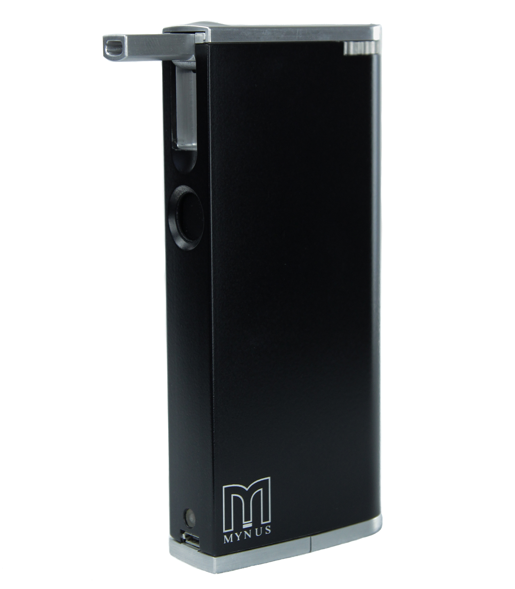

Most smokers want to give up. Many either don't have the courage to begin the process or the staying power to see it through. For the first time ever, there is a stylish device that can help them begin the journey to a healthier life and a healthier world.
Mynus™ is a device that allows you to control how much smoke you inhale while using your own cigarettes. At the same time, it makes sure that virtually all humanly detectable smoke and odor is captured within the device and never escapes into the atmosphere. No one has ever conceived of a device that can help people stop smoking and eliminate second-hand smoke and odor.
The many patent-pending designs of Mynus™ allow you to use your favorite brand of cigarettes to begin to wean yourself off them. It's not an e-cigarette. Instead, it's an ingenious device which you insert a real cigarette into. You choose one of ten metering disks that set the ratio between air and smoke you want to inhale. Then you light up with the push of a button and inhale, and then exhale back through the mouthpiece. After a few cigarettes, you empty the ashes through the bottom of the device.
The cigarette receiver's patent-pending design allows you to install one of ten disks that sets the ratio of how much air and how much smoke you want to inhale. These disks are numbered. You can change the setting in 10% increments from 100% smoke (Number 10), all the way to down to only 10% smoke (Number 1).
A system of check valves ensures that the airflow enters the combustion chamber, and then exits through the patent-pending filter. As the smoke exits through the replaceable filter, four proprietary elements remove virtually all humanly detectable smoke and odor.
+-+-+-+-+-+-+-+-+-+-+-+-+-+-+-+-+-+-+-+-+-+-+-+-+-+-+-+-+-+-+-+-+-+-+-+-+-+-+-+-+-+-+-+-+
With Mynus™, you gradually decrease how much smoke, and therefore nicotine, you inhale, until, hopefully, your craving subsides to a point where you don't need to smoke any more.
With Mynus™, the device not only captures virtually all humanly detectable smoke, but the odor too. Which means you, and everyone around you benefits.
Where 80 percent of most people's cigarettes burn away into the atmosphere without being smoked, with Mynus™, the cigarette only burns for as long as you inhale. Once you stop inhaling, the cigarette quickly stops burning.
Kelly Adamic, of Mynus Corp. and his team have spent years and many hundreds of thousands of dollars on research and development, design, prototyping and patent applications around the world. Kelly originally had the idea when his friend Ron was in the hospital and was, frankly, dying for a cigarette.
At first, Kelly (a non-smoker) designed a device that would allow someone in Ron's situation to smoke discretely. Then he took Mynus™ a step further by creating and adding a feature that helps you stop smoking altogether. Mynus™ is 100 percent designed, thoroughly tested and will be almost entirely made and assembled in America.
Mynus™ is currently raising funds on Indiegogo.com in order to bring Mynus™ in to production. Please consider making your contribution to changing the lives of smokers—and non-smokers—and to making the world a smoke-free place.